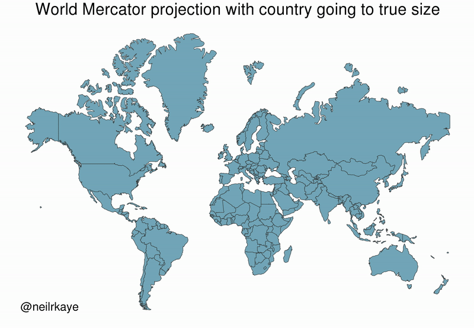
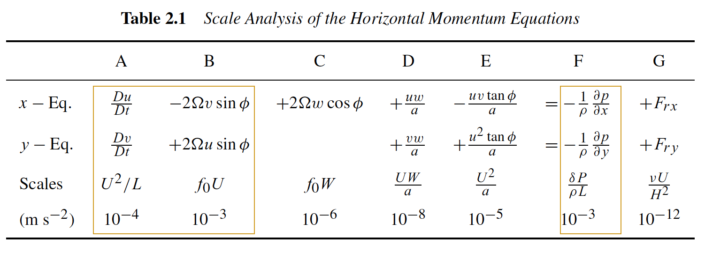
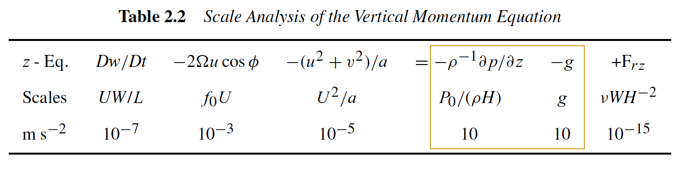
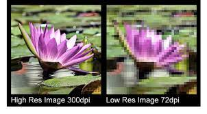

class: center, middle <br/><br/> .title[7 Conservación de energía y ecuaciones primitivas] .subtitle[Módulo 3: Dinámica de la Atmósfera] <br/><br/> .author[Diplomado en Meteorología y Climatología] .institution[ICAyCC] <br/> .date[1 de marzo de 2023] <br/><br/> <!-- .note[Created with [{Liminal}](https://github.com/jonathanlilly/liminal) using [{Remark.js}](http://remarkjs.com/) + [{Markdown}](https://github.com/adam-p/markdown-here/wiki/Markdown-Cheatsheet) + [{KaTeX}](https://katex.org)] --> --- name: toc class: left <img style="width:40%" src="./figures/ink.jpg"> #Contenido 1. [Soluciones cuestionario 1](#quizz) 1. [Repaso clase pasada](#repaso) 1. [Resumen de ecuaciones hasta ahora](#ecs) 1. [Ecuación de estado](#estado) 1. [Conservación de energía](#energia) 1. [Aproximación de Boussinesq](#boussi) 1. [Ecuaciones primitivas](#primitivas) <!-- Comment out the next slide if you don't want the Table of Contents link --> --- layout: true .toc[[✧](#toc)] --- name: quizz class: left ## Soluciones del cuestionario 1 1) Los flujos geofísicos de gran escala tienden a ser: a) someros ($H<<L$) y 3D ($W$~$U$), b) muy profundos ($H>L$) y 3D ($W$~$U$), c) someros ($H<<L$) y cuasi-2D ($W<<U$), d) muy profundos ($H>L$) y cuasi-2D ($W<<U$) donde $H$, $L$, $W$, $U$ son las escalas características de profundidad, longitud horizontal, velocidad vertical y velocidad horizontal, respectivamente. -- <span style="color:grey;font-weight:400;font-size:25px"> Respuesta: c </span> --- class: left 2) En dinámica de fluidos geofísicos la rotación terrestre es importante cuando $Ro$ < 1 (en clase lo vimos como $\epsilon$. Evalúa el número de Rossby usando magnitudes características de $U$ , $f$ y $L$ para los siguientes flujos para determinar si la rotación terrestre les afecta o no (Puedes considerar $\Omega$~$10^{-4}$. ): (i) Un tornado en Kansas;</br> (ii) en el remolino que se forma en una tina al vaciarla, en cualquier lugar de la Tierra;</br> (iii) en las corrientes de chorro atmosféricas cerca de Antártida a 700 Pa.</br> a) la rotación es importante únicamente en i </br> b) la rotación es importante únicamente en iii </br> c) la rotación es importante en i, ii, iii</br> d) la rotación es importante únicamente en ii y iii</br> e) la rotación es importante únicamente en ii </br> -- <span style="color:grey;font-weight:400;font-size:25px"> Respuesta: b </span> --- class: left 3) Escribe cuál es el efecto principal de la rotación y la estratificación en un fluido geofísico. -- <span style="color:grey;font-weight:400;font-size:25px"> Respuesta: El efecto principal de la rotación es desviar al flujo hacia la derecha en el hemisferio norte y a la izquierda en el Sur, mientras que la estratificación inhibe movimientos verticales y da estructura vertical al flujo. </span> --- class: left 4) La derivada material de una campo de temperatura que está dado por $T(t,x)=Ax+Bt$ donde $A$ y $B$ son constantes con unidades C/m y C/s respectivamente, en un fluido que fluye únicamente en dirección $x$, es decir su velocidad solo tiene una componente, $U$. a) DT/Dt = B+UA </br> b) DT/Dt = B </br> c) DT/Dt = A + B </br> d) DT/Dt = Ax+Bt </br> e) DT/Dt = UAx + UB </br> -- <span style="color:grey;font-weight:400;font-size:25px"> Respuesta: a </span> --- class: left 5. La frecuencia de flotación o de Brunt-Väisälä ($N^2$) es una medida de la ___________ de una columna de fluido, es proporcional a la ___________ y nos dice la frecuencia a la que oscilaría un elemento de fluido perturbado verticalmente. a) rotación, profundidad </br> b) estratificación, densidad </br> c) estratificación, profundidad </br> d) estratificación, derivada vertical de la densidad </br> e) rotación, derivada vertical de la densidad </br> -- <span style="color:grey;font-weight:400;font-size:25px"> Respuesta: d </span> --- name: repaso class: left ## La clase pasada aprendimos: * Una partícula libre en un plano en rotación seguirá un movimiento circular en el sistema en rotación (**oscilación inercial**). </br></br> * El sentido del movimiento es opuesto al de rotación (horario para $f>0$ y antihorario para $f<0$). </br></br> * El radio de la circunferencia está dado por $V_0/|f|$, donde $V_0$ es la velocidad inicial y $|f|$ es la magnitud del **parámetro de Coriolis** (f=$2\Omega$). </br></br> * El periodo que la partícula tarda en competar una vuelta se conoce como **periodo inercial** y está dado por $T_p=2\pi/f= \pi/\Omega$. --- name: repaso class: left * En 3D, para cada punto sobre la esfera, el vector $\mathbf{f}=2\mathbf{\Omega}$, donde $\mathbf{\Omega}$ es el vector de rotación, se descompone en una componente vertical *parámetro de Coriolis* $f=2\Omega\sin{\varphi}$ (rotación en el plano horizontal) y una horizontal conocida como *parámetro de Coriolis recíproco* $f^*=2\Omega\cos{\varphi}$ (rotación en el plano vertical, efecto despreciable). </br></br> * En el caso 3D, el movimiento horizontal también es circular (oscilaciones inerciales) pero $f=2\Omega \sin{\varphi}$ --- name: ecs class: left # Ecuaciones de movimiento 1. Queremos establecer las ecuaciones que gobiernan el movimiento de un flujo estratificado en rotación. 2. Una vez establecidas las ecuaciones, queremos simplificarlas (aún más) utilizando la aproximación de Boussinesq. 3. Finalmente tendremos el conjunto completo de ecuaciones que describen a los fluidos geofísicos y podremos empezar a trabajar con ellas. --- class: left ## Conservación de masa (clase 01) El cambio local en la masa dentro de un volumen de control se compensa con la divergencia local del flujo de masa en el volumen: $$\frac{D\rho}{Dt}+\rho\nabla\cdot\mathbf{u}=0,$$ donde $\rho$ es la densidad (en kg$~$m$^{-3}$), $D/Dt$ es la derivada material $(\partial/\partial t + \mathbf{u}\cdot \nabla )$, y $\mathbf{u}=(u,v,w)$ es el vector velocidad. Esta ecuación también se conoce como *ecuación de continuidad*. En un *fluido incompresible* $\rho$ es constante, por lo que $D\rho/ Dt=0$ y la ecuación de continuidad queda como: $$\nabla\cdot\vec{u}=0.$$ .caption[NOTA: La geometria esférica agrega algunos términos de curvatura que vamos a despreciar considerando escalas de movimiento menores a la escala global.] --- name: mmtm class: left ## Conservación de momento (clase 02) Segunda Ley de Newton $(\sum{\mathbf{F}}=d\mathbf{p}/dt\approx m\mathbf{a})$, escrita por unidad de masa. Sin rotación: $$\rho\frac{Du}{Dt}=-\frac{\partial p}{\partial x}+\mu\Big(\frac{\partial^2 u}{\partial x^2}+\frac{\partial^2 u}{\partial y^2}+\frac{\partial^2 u}{\partial z^2}\Big)$$ $$\rho\frac{Dv}{Dt}=-\frac{\partial p}{\partial y}+\mu\Big(\frac{\partial^2 v}{\partial x^2}+\frac{\partial^2 v}{\partial y^2}+\frac{\partial^2 v}{\partial z^2}\Big)$$ $$\rho\frac{Dw}{Dt}=-\rho g-\frac{\partial p}{\partial z}+\mu\Big(\frac{\partial^2 w}{\partial x^2}+\frac{\partial^2 w}{\partial y^2}+\frac{\partial^2 w}{\partial z^2}\Big)$$ Recuerden que, de manera general, los términos debidos a las fuerzas de superficie se escriben en términos del tensor de esfuerzos. Aquí utilizamos las ecuaciones consitutivas y obtuvimos al término $\partial p_i/\partial x_i$ y la disipación $\mu\nabla^2 u_i$ ¡Esto es una aproximación! --- class: left ## Conservación de momento con rotación * El sistema cartesiano funciona si las escalas espaciales son mucho menores que la escala planetaria ($L<<R_{Tierra}$ Ej. $L < 1000$ km está bien). * Si consideramos escalas más grandes debemos transformar $x$, $y$ y $z$ a un sistema de coordenadas esféricas y los terminos de curvatura que ingnoramos anteriormente entrarán a las ecuaciones. .center[  ] .caption[https://vividmaps.com/map-projections/] --- class: left ## Momento en esféricas y escalas de cada término En forma $\bf{vectorial}$: $$\frac{D\bf{U}}{Dt}=-2\bf{\Omega} \times \bf{U} - \frac{1}{\rho}\nabla p + \bf{g} + \bf{F_r}$$ donde el término $\bf{F_r}$ contiene a las fuerzas de fricción/disipación. Estas ecuaciones funcionan para coordenadas cartesianas o esféricas ($\phi, \lambda, z$). En esféricas: Definimos $x$ y $y$ como las distancias hacia el **este** y hacia el **norte**, respectivamente, de manera que .center[ $Dx = a \cos{\phi} D\lambda$ y $Dx = a D\phi$,] donde $a$ es el radio de la Tierra, $\phi$ la latitud y $\lambda$ la longitud. --- Entonces, las velocidades al **este**, al **norte**, y **vertical** son: .center[ $u \equiv \frac{Dx}{Dt}$ y $v \equiv \frac{Dx}{Dt}$.] usando las definiciones de $x$ y $y$: .center[ $u \equiv r\cos{\phi} \frac{D \lambda}{Dt}$, $v \equiv r\frac{D \phi}{Dt}$, $w \equiv \frac{Dz}{Dt}$] donde $r$ es la distancia al centro de la Tierra ($r \sim a$), $u$ es la velocidad zonal (positiva al este), $v$ la meridional (positiva al norte), y $w$ la vertical (positiva hacia arriba). El sistema (x,y,z) definido así NO es cartesiano, pues las direcciones (vectores unitarios) son función de la posición en la esfera. Esto genera términos extra cuando expandimos los términos en la ec. de momento. --- Después de un poco de talacha, las ecuaciones de momento para las componentes de movimiento hacia el este, hacia el norte y vertical sobre la esfera quedan como: $$\frac{Du}{Dt} - \frac{uv \tan{\phi}}{a} + \frac{uw}{a} = -\frac{1}{\rho}\frac{\partial p}{\partial x}+ fv - f^*w+F_{rx}$$ $$\frac{Dv}{Dt} + \frac{u^2 \tan{\phi}}{a} + \frac{vw}{a} = -\frac{1}{\rho}\frac{\partial p}{\partial y}- fv +F_{ry}$$ $$\frac{Dw}{Dt} + \frac{u^2+v^2}{a} = -\frac{1}{\rho}\frac{\partial p}{\partial z}- g + f^*u +F_{rz}.$$ Los términos proporcionales a $1/a$ se conoecn como *términos de curvatura*. Son no lineales y complican el análisis, pero podemos ignorarlos porque son pequeños en escalas sinópticas. --- ## Escalas de los términos de las ecuaciones de momento Esto es un tipo de filtrado de escalas más rápidas y pequeñas. Escalas características: |Símbolo|Valor ~|Escala| |:-:|:-:|:-:| |U|10 m s$^{-1}$| velocidad horizontal| |W|1 cm s$^{-1}$| velocidad vertical| |L|10$^6$ m| longitud horizontal| |H|10$^4$ m| altura| |$\delta P$/$\rho$|10$^3$ m$^2$s$^{-2}$|variaciones de presión horizontal| |L/U|10$^5$ s| tiempo| Para latitudes medias y escalas sinópticas, $f = 2\Omega\sin(45)\sim 2\Omega\cos(45) \approx 10^{-4}$ s$^{-1}$ --- ## De qué tamaño es cada término: .center[  </br>  ] .caption(tamaño aproximado de los términso de las ecuaciones de momento. Tablas de Holton (2004), capítulo 2) --- Entonces, las ecuaciones de momento para escalas sinópticas quedan como (clases 5 y 6): $$\rho\frac{Du}{Dt}-fv=-\frac{\partial p}{\partial x}$$ $$\rho\frac{Dv}{Dt}+fu=-\frac{\partial p}{\partial y}$$ $$\rho g=-\frac{\partial p}{\partial z}$$ donde x, y, z apuntan en dirección este, norte y arriba, respectivamente, $f=2\Omega \sin{\phi}$, $\rho$ es la densidad, $p$ es la presión, $g$ es la aceleración debida a la gravedad (gravedad aparente o neta) y usamos la aproximación hidrostática en la ecuación de momento vertical. Hasta ahora tenemos **4 ecuaciones** (3 momento, 1 de continuidad) y **5 incógnitas** ($u$, $v$, $w$, $p$, $\rho$). ¡Necesitamos una para $p$! --- name: estado class: left ## Ecuación de estado * Relación entre presión y densidad. * En verdad es más complicado (módulo de termodinámica), pero aproximadamente es así: Aire seco en la atmósfera se comporta como gas ideal (aprox.) $$\rho=\frac{P}{RT}$$ donde $P$ es la presión, T es la temperatura absoluta en K y $R$ = 287 m$^2$s$^{-2}$K$^{-1}$ (condiciones normales de T y P. --- Pero el aire en la atmósfera contiene vapor de agua: $$\rho=\frac{P}{RT(1+0.608q),}$$ donde $q$ es la humedad específica, definida como $$q=\frac{\textrm{masa vapor}}{\textrm{masa aire}}=\frac{\textrm{masa vapor}}{\textrm{masa aire seco} + \textrm{masa vapor}}.$$ --- class: left ## ¿Cómo vamos? Llevamos **5 ecuaciones** (3 de momento, 1 de continuidad, 1 ecuación de estado) pero ahora tenemos **7 variables** ($u$, $v$, $w$, $P$, $\rho$, $T$ y $q$). ¿De dónde podemos obtener otras 2 ecuaciones? * Conservación de energía * Conservación de vapor de agua Vamos a las notas... --- name: energia class: left ## Conservación de energía $1^{a}$ Ley de la termodinámica La **energía interna** ganada por una parcela de fluido es igual al **calor** que recibe menos el **trabajo mecánico** que realiza. Por unidad de masa y de tiempo esto es: $$\frac{De}{Dt}=Q-W, \textrm{ (1)}$$ donde $e$ es la energía interna, $Q$ es el calor y $W$ es el trabajo hecho por el gradiente de presión. La **energía interna** es una "medida" de la agitación térmica de las moléculas en el fluido y es proporcional a la temperatura: $$e=C_vT, \textrm{ (2)}$$ donde $C_v$ es la **capacidad calorífica** a volumen constante (Ej. aire a nivel del mar y temperatura ambiente $C_v=718$ Jkg$^{-1}$K$^{-1}$. --- ### Término de calor $Q$ En la atmósfera la condensación y evaporación liberan o absorben **calor latente**. Pero dejando de la termodinámica atmosférica, que es mucho más complicada que esto, el término $Q$ en (1) solo incluye el calor ganado por la parcela debido al contacto con sus vecinas por medio de la difusión. Usando la Ley de Fourier de conducción: $$Q=\frac{K_T}{\rho}\nabla^2T, \textrm{ (3)}$$ donde $K_T$ es **conductividad térmica** del fluido y $\nabla^2$ es el operador laplaciano que en cartesianas es $\partial^2/\partial x^2+\partial^2/\partial y^2+\partial^2/\partial z^2$. --- ### Término de energía mecánica $W$ El trabajo realizado por el fluido es la fuerza debida a la presión ($P/A$) por el desplazameinto en dirección de la fuerza. Contando área por desplazameinto=volumen, el trabajo es presión x cambio de volumen, por unidad de masa y tiempo esto es: $$W=P\frac{D\mathcal{V}}{Dt}, \textrm{ (4)}$$ donde $\mathcal{V}$ es volumen por unidad de masa ($1/\rho$). Nota: la fuerza de Coriolis NO realiza trabajo debido a que va en dirección perpendicular al desplazamiento. --- ### Ecuación de energía Sustituyendo los valores de los términos para $e$, $Q$ y $W$ en (1): $$C\_v \frac{DT}{Dt}=\frac{K\_T}{\rho}\nabla^2T-P\frac{D\mathcal{V}}{Dt} = \frac{K\_T}{\rho}\nabla^2T-\frac{P}{\rho^2}\frac{D\rho}{Dt}. \textrm{ (5)}$$ Usando la ecuación de continuidad completa: $$\frac{\partial \rho}{\partial t}+ \frac{\partial (\rho u)}{\partial x} + \frac{\partial (\rho v)}{\partial y}+ \frac{\partial (\rho w)}{\partial z}$$ para reescribir la término $D\rho/Dt$: $$\rho C\_v \frac{DT}{Dt}+ p\left(\frac{\partial u}{\partial x}+ \frac{\partial v}{\partial y}+ \frac{\partial w}{\partial z}\right) =K\_T \nabla^2T. \textrm{ (6)}$$ --- class: left ## Conservación de humedad **Humedad específica** : $$\frac{Dq}{Dt}=\kappa_q\nabla^2q$$ $q$ se redistrubuye por contacto ocn parcelas vecinas con distinta $q$ y $\kappa_q$ es un coeficiente de difusión similar al térmico. Estamos **ingnorando la evaporación y la condensación**. La ecuación de conservación es más complicada de lo que escribimos aquí, pero para fines de la clase consideremos esta versión. --- name: boussi class: left ## Aproximación de Boussinesq * En la atmósfera la densidad varía muy poco. * Cambio de $\rho$ del suelo a la exósfera: 100% Pero estos cambios son principalmente hidrostáticos, el resto de la variación es muy pequeña. * Además, en la tropósfera $\Delta\rho<$5%. Podemos asumir que la densidad $\rho$ no varía mucho respecto a un valor de referencia promedio $\rho_0$: $\rho(x,y,z,t)=\rho_0 + \rho'(x,y,z,t) $ con $|\rho'|<<\rho_0$ causada por la estratifición o por el movimiento del fluido. Usando esta aproximación, ¿cómo se modificacn las ecuaciones que llevamos hasta ahora? --- ### Ecuacion de continuidad (Ya lo habíamos visto) $$\frac{D\rho}{Dt}+\rho\nabla\cdot\mathbf{u}=0,$$ Derivadas donde aparece $\rho'$ se vuelven muy chiquitas en comparación a términos con $\rho_0$ y entonces queda $$\nabla\cdot\mathbf{u}=0.$$ La conservación de masa se simplifica a ser conservación de volumen. --- ### Ecuaciones de momento horizontales $\rho$ aparece multiplicando del lado izquierdo, y los términos con $\rho_0$ dominarán sobre los términos con $\rho'$: $$\rho\_0\frac{Du}{Dt}-fv=-\frac{\partial p}{\partial x} + F\_{rx}$$ $$\rho\_0\frac{Dv}{Dt}+fu=-\frac{\partial p}{\partial y} + F\_{ry}$$ --- ### Ecuación de momento vertical La densidad aparece también en la presión hidrostática $P_0$ ($\partial P\_0/\partial z=-\rho\_0g$). Escribimos a la presión como: $$P=P\_0(z) + P'(x,y,z,t)$$ y la ecuación de momento vertical queda como: $$\frac{Dw}{Dt} = -\frac{1}{\rho\_0}\frac{\partial P'}{\partial z}- \boxed{\frac{\rho'g}{\rho\_0}} + F\_{rz}.$$ en la caja: fuerzas de flotación. --- ### Ecuación energía Todo es más complicado pero podemos aproximarla como (Eg. Spiegel, Spiegel y Veronis (1960)) $$\frac{D\rho}{Dt}=\kappa\nabla^2\rho'$$ --- class: left ### Consecuencias de Boussinesq * Dejaremos de usar las primas ($\rho'$ y $P'$) por comodidad pero nos referiremos a las perturbaciones. * La presión total solo aparece en la ecuación de estado, las demás ocurrencias de $P$ son perturbaciones de presión. * ¡No hay ondas de sonido si hacemos esta aproximación! --- class: left ## El término de fricción en las ecuaciones de momento * No hablamos mucho de estos términos, pero los flujos geofísicos están en estado **turbulento**. * Nos interesa encontrar ecuaciones para el comportamiento estadístico (Reynolds: Ej. $u=< u > +u'$, promedio + variaciones) (Cushman cap. 4.1). * Nuestras ecuaciones funcionan para las $< u >$, $< v >$, $< w >$, ... --- * La viscosidad molecular no refleja la disipación a escala de nuestras ecuaciones (filtradas) y la sustituimos por una **viscosidad equivalente** que incluya procesos disipativos y turbulentos que no podemos resolver en nuestra escala (Ej. microescala)  .caption[Imagen de [contemporary comunications inc.](https://ccideas.com/chatter/high-resolution-images-vs-low-resolution-images-a-short-primer-for-beginners/)] --- ## Resumen de ecuaciones Aproximación de Boussinesq + argumentos de escalas + viscosidad efectiva constante: 1. Continuidad: $$\frac{\partial u}{\partial x}+ \frac{\partial v}{\partial y}+ \frac{\partial w}{\partial z}=0$$ 2-4. Momento: $$\frac{Du}{Dt}-fv=-\frac{1}{\rho_0}\frac{\partial p}{\partial x}+A\left(\frac{\partial u}{\partial x}+\frac{\partial u}{\partial y}\right) + \nu_E\frac{\partial u}{\partial z}$$ $$\frac{Dv}{Dt}+fu=-\frac{1}{\rho_0}\frac{\partial p}{\partial y}+A\left(\frac{\partial v}{\partial x}+\frac{\partial v}{\partial y}\right) + \nu_E\frac{\partial v}{\partial z}$$ $$0=-\rho g - \frac{\partial p}{\partial z}$$. --- class: left 5.Energía: $$\frac{D \rho}{Dt} = A\left(\frac{\partial \rho}{\partial x}+\frac{\partial \rho}{\partial y}\right) + \kappa_E\frac{\partial \rho}{\partial z}$$ **Incógnitas**: $u$, $v$, $w$, $p$, $\rho$ ($T$ y $Q$ quedan dentro de $\rho$) **Constantes**: Densidad de referencia $\rho_0$ , aceleración de la gravedad $g$. **Cuasi-constantes**: $f = 2\Omega \sin{\phi}$ (depende de la latitud o puede tomarse como constante si aproximamos un plano alrededor de una latitud). Viscosidades efectivas (eddy) $A$ y $\nu_E$, difusividad efectiva (eddy diffusivity) $\kappa_E$. Para esta clase tomamos a $A$, $\nu_E$ y $\kappa_E$ como constantes pero estríctamente pueden ser función del espacio, tiempo o variables de estado. 1-5 se conocen como **ecuaciones primitivas**. --- class: left # Referencias * Holton, Introduction to Dynamic Meteorology, 4ta edición, Capítulo 2 * Cushman-Roisin y Beckers, Introduction to Geophysical Fluid Dynamics, 2da edición, Capítulo 3.